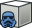

The Arch workbench provides modern BIM workflow to FreeCAD, with support for features like IFC support, fully parametric architectural entities such as walls, structural elements or windows, and rich 2D document production. The Arch workbench also feature all the tools from the Draft Workbench.
Note: The BIM functionality of FreeCAD is now progressively split into this Arch Workbench, which holds all the base BIM tools, and the BIM Workbench addon, that you can install via menu Tools->Addon Manager, that adds a new interface layer on top of the Arch tools, with the aim to make BIM workflow in FreeCAD more intuitive and user-friendly.

Contents
Tools
These are tools for creating architectural objects.
-
 Wall: Creates a wall from scratch or using a selected object as a base
Wall: Creates a wall from scratch or using a selected object as a base -
 Structural element: Creates a structural element from scratch or using a selected object as a base
Structural element: Creates a structural element from scratch or using a selected object as a base
- Rebar tools
-
 Straight Rebar: Creates a Straight reinforcement bar in a selected structural element
Straight Rebar: Creates a Straight reinforcement bar in a selected structural element -
 UShape Rebar: Creates a UShape reinforcement bar in a selected structural element
UShape Rebar: Creates a UShape reinforcement bar in a selected structural element - LShape Rebar: Creates a LShape reinforcement bar in a selected structural element
-
 Bent Shape Rebar: Creates a Bent Shape reinforcement bar in a selected structural element
Bent Shape Rebar: Creates a Bent Shape reinforcement bar in a selected structural element -
 Stirrup Rebar: Creates a Stirrup reinforcement bar in a selected structural element
Stirrup Rebar: Creates a Stirrup reinforcement bar in a selected structural element -
 Helical Rebar: Creates a Helical reinforcement bar in a selected structural element
Helical Rebar: Creates a Helical reinforcement bar in a selected structural element -
 Rebar: Creates a custom reinforcement bar in a selected structural element using a sketch
Rebar: Creates a custom reinforcement bar in a selected structural element using a sketch
-
{kind=link}
-
 Floor: Creates a floor including selected objects
Floor: Creates a floor including selected objects - Building Part: Creates a building part including selected objects
-
 Building: Creates a building including selected objects
Building: Creates a building including selected objects -
 Site: Creates a site including selected objects
Site: Creates a site including selected objects -
 Window: Creates a window using a selected object as a base
Window: Creates a window using a selected object as a base -
 Section Plane: Adds a section plane object to the document
Section Plane: Adds a section plane object to the document
{kind=link}
- Axis tools
-
 Axis: Adds a 1-direction array of axes to the document
Axis: Adds a 1-direction array of axes to the document -
 Axes system: Adds an axes system composed of several axes to the document
Axes system: Adds an axes system composed of several axes to the document -
 Grid: Adds a grid-like object to the document
Grid: Adds a grid-like object to the document
-
-
 Roof: Creates a sloped roof from a selected face
Roof: Creates a sloped roof from a selected face -
 Space: Creates a space object in the document
Space: Creates a space object in the document -
 Stairs: Creates a stairs object in the document
Stairs: Creates a stairs object in the document
- Panel tools
-
 Panel: Creates a panel object from a selected 2D object
Panel: Creates a panel object from a selected 2D object -
 Panel Cut: Creates a 2D cut view from a panel available in version 0.17
Panel Cut: Creates a 2D cut view from a panel available in version 0.17
-
-
 Panel Sheet: Creates a 2D cut sheet including panel cuts or other 2D objects available in version 0.17
Panel Sheet: Creates a 2D cut sheet including panel cuts or other 2D objects available in version 0.17
-
-
 Nest: Allow to nest several flat objects inside a container shape available in version 0.17
Nest: Allow to nest several flat objects inside a container shape available in version 0.17
-
-
 Frame: Creates a frame object from a selected layout
Frame: Creates a frame object from a selected layout -
 Equipment: Creates an equipment or furniture object
Equipment: Creates an equipment or furniture object
- Pipe tools available in version 0.17
-
 Pipe: Creates a pipe available in version 0.17
Pipe: Creates a pipe available in version 0.17
-
-
 Pipe Connector: Creates a corner or tee connection between 2 or 3 selected pipes available in version 0.17
Pipe Connector: Creates a corner or tee connection between 2 or 3 selected pipes available in version 0.17
-
- Material tools
-
 Material: Creates a material and attributes it to selected objects, if any
Material: Creates a material and attributes it to selected objects, if any -
 Multi-Material: Creates a multi-material and attributes it to selected objects, if any available in version 0.17
Multi-Material: Creates a multi-material and attributes it to selected objects, if any available in version 0.17
-
-
 Schedule: Creates different types of schedules
Schedule: Creates different types of schedules
Modification tools
These are tools for modifying architectural objects.
-
 Cut with plane: Cut an object according to a plan.
Cut with plane: Cut an object according to a plan. -
 Add component: Adds objects to a component
Add component: Adds objects to a component -
 Remove component: Subtracts or removes objects from a component
Remove component: Subtracts or removes objects from a component -
 Survey: Enters or leaves surveying mode
Survey: Enters or leaves surveying mode
Utilities
These are additional tools to help you in specific tasks.
-
 Component: Creates a non-parametric Arch component
Component: Creates a non-parametric Arch component -  Clone component:
-
 Split Mesh: Splits a selected mesh into separate components
Split Mesh: Splits a selected mesh into separate components -
 Mesh To Shape: Converts a mesh into a shape, unifying coplanar faces
Mesh To Shape: Converts a mesh into a shape, unifying coplanar faces -
 Select non-solid meshes: Selects all non-solid meshes from the current selection or frm the document
Select non-solid meshes: Selects all non-solid meshes from the current selection or frm the document -
 Remove Shape: Turns cubic shape-based arch object fully parametric
Remove Shape: Turns cubic shape-based arch object fully parametric -
 Close Holes: Closes holes in a selected shape-based object
Close Holes: Closes holes in a selected shape-based object -
 Merge Walls: Merge two or more walls
Merge Walls: Merge two or more walls -
 Check: Check if the selected objects are solids and don't contain defects
Check: Check if the selected objects are solids and don't contain defects -
 Ifc Explorer: Browse the contents of an IFC file
Ifc Explorer: Browse the contents of an IFC file - Toggle IFC Brep flag: Forces a selected object to be exported as an IfcFacetedBrep.
-
 3 Views from mesh: Creates top, frontal and side views from a mesh.
3 Views from mesh: Creates top, frontal and side views from a mesh. - Create IFC spreadsheet...:
-
 Toggle Subcomponents: Shows or hides the subcomponents of an Arch object.
Toggle Subcomponents: Shows or hides the subcomponents of an Arch object.
{kind=link}
{kind=link}
Preferences
-
 Preferences...: Preferences disposable in Arch Module.
Preferences...: Preferences disposable in Arch Module.
File formats
- IFC : Industry foundation Classes
- DAE : Collada mesh format
- OBJ : Obj mesh format (export only)
- JSON : JavaScript Object Notation format (export only)
- 3DS : 3DS format (import only)
API
The Arch module can be used in python scripts and macros using the Arch Python API functions.
Tutorials
- Arch tutorial
- Quick arch overview on Yorik's blog
- Video presentation of the Arch workbench
- Import from STL or OBJ
- Export to STL or OBJ
- Arch panel tutorial
- BIM modeling chapter from the FreeCAD manual